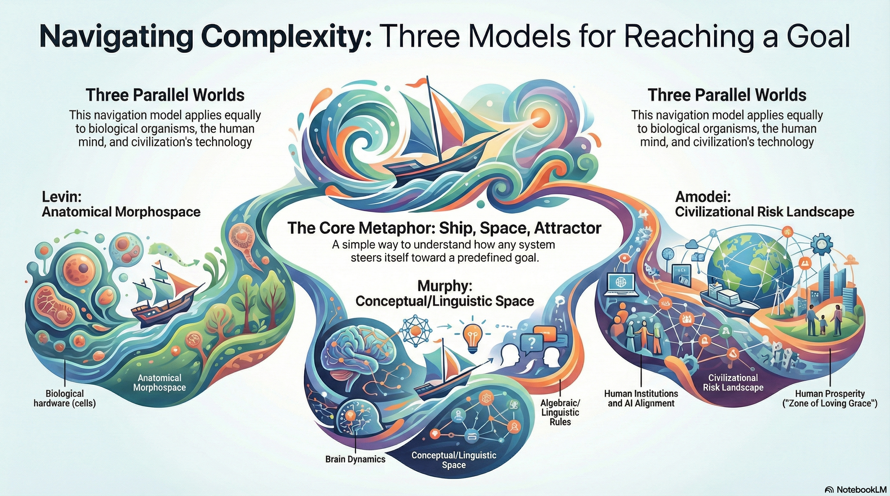

Dario's latest essay1 got me thinking about how goal-directed navigation is handled in other realms and how we might apply similar understanding to AI alignment.
Is it possible that there's an underlying universal mechanism at work here that we can leverage to guide us toward our goals?
The collective insights of Michael Levin, Elliot Murphy, and Dario Amodei describe one such mechanism where biological, mental, and technological systems navigate abstract landscapes to reach stable, human-aligned, or functional states.
The metaphor of "sailing a ship through a sea of attractor spaces" is a handy way to understand this.

🧭 The Biological Compass: Michael Levin and Morphospace
Levin provides a direct biological foundation for the metaphor. He argues that morphogenesis—the process by which an embryo or regenerating limb takes shape—is essentially a navigation of anatomical morphospace. He views biological systems as having "navigational competencies" that seek out specific target morphologies or "attractors."
DNA as Hardware, Not the Plan: Levin suggests that DNA only specifies the "hardware" (the proteins). The actual shapes are Platonic patterns that the hardware "pulls down" or interfaces with.
Goal-Directed Navigation: Biological systems use homeostatic processes to minimize "error" and steer back toward a target form if they are deviated from it, much like a ship correcting its course in a storm.
🗺️ The Mental Map: Elliot Murphy and Linguistic Algebra
Murphy applies this logic to the human mind, suggesting that language functions according to Platonic forms—specifically algebraic rules—that act as a compass for organizing thought. These rules allow us to reach specific coordinates in conceptual space.
Algebraic Anchors: Just as cells navigate to a physical shape, the brain uses "merge-based syntax" to enforce specific structural hierarchies. These are viewed as necessary design features of language that the brain must neurally enforce.
The ROSE Model: Murphy proposes that the brain coordinates these abstract mental processes through specific oscillatory dynamics (brain waves), which serve as the mechanism for navigating and shielding mental "attractors" like grammar and meaning.
🚢 The Civilizational Ship: Dario Amodei and Technological Steering
Amodei scales this navigational logic to the macro-level of humanity. He views the development of powerful AI as a "rite of passage" or "technological adolescence" that requires careful steering to survive.
Navigating the Gauntlet: Humanity is currently in a "turbulent" space, navigating away from catastrophic risks—such as autonomy failure, misuse for destruction, and economic disruption—and toward a "dream" of human prosperity.
Alignment as the Rudder: The process of "alignment" (such as Constitutional AI) is an attempt to program values and principles into AI, ensuring that as these systems become more autonomous, they remain "wholesome" and aligned with the "attractor space" of human well-being.
Comparison Table: Navigating the Spaces
Source
The "Space" Navigated
The "Ship" (Interface)
The "Attractor" (Goal)
Levin
Anatomical Morphospace
Biological hardware (cells)
Target Morphology
Murphy
Conceptual/Linguistic Space
Neural dynamics (ROSE model)
Algebraic/Syntactic Rules
Amodei
Civilizational Risk Landscape
Human institutions and AI Alignment
Human Prosperity ("Machines of Loving Grace")
Key Insight: Whether it is a single cell navigating anatomical space, a brain navigating linguistic algebra, or humanity navigating the risks of AI, the underlying mechanism is the same: an interface (the "ship") using specific rules (the "rudder") to reach a stable, functional pattern (the "attractor") within a vast sea of possibilities.